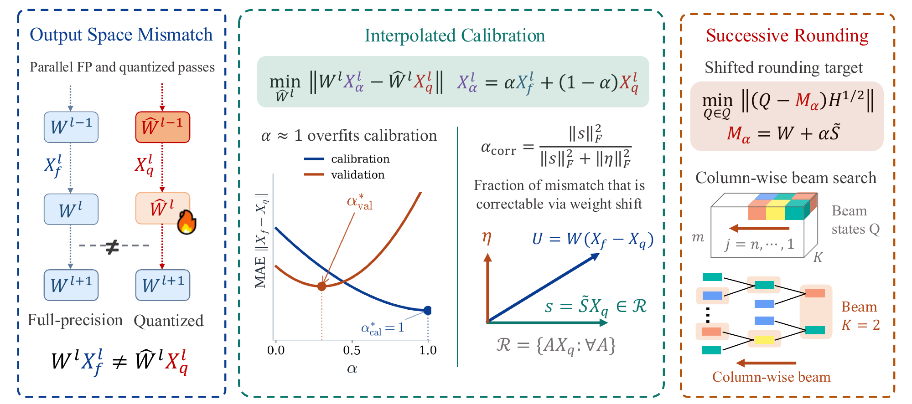
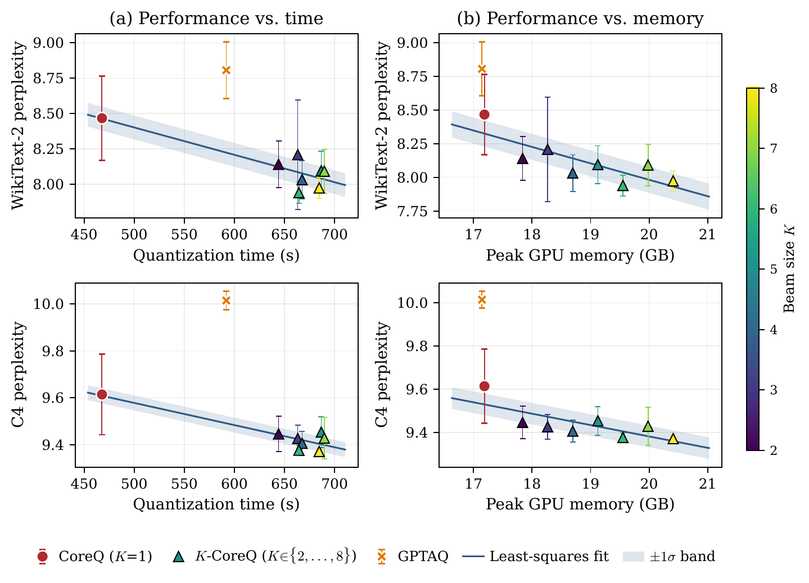

Overview

Deploying modern LLMs at low bit-widths hinges on post-training quantization (PTQ): compress a pretrained model to an integer grid without retraining, while preserving accuracy. Layer-wise PTQ methods typically do this by solving a small calibration problem per layer — but the standard recipe forces a hard choice between two imperfect objectives. A reconstruction objective, which matches the layer's output on already-quantized inputs, is numerically stable but pretends the upstream quantized activations are the ground truth. A mismatch objective, which matches the full-precision output on full-precision inputs, accounts for upstream error but is noisy at the sample sizes used for calibration. Both are reasonable proxies, yet neither directly targets the quantity we actually care about: how the quantized layer will behave under real, unseen activations at deployment.
CoreQ starts from that deployment-time quantity and asks a simple question: of the activation mismatch a quantized layer produces, how much can the layer actually correct by choosing its weights, and how much is fundamentally unreachable? Splitting the error along these lines yields a correction term that can be folded back into the weight matrix, effectively shifting the rounding target from the original weights to a nearby mismatch-corrected matrix. The remaining residual — the part no weight choice can fix — is explicitly shrunk by a single interpolation coefficient whose optimal value is available in closed form, with no tuning or validation sweep. Crucially, the shifted objective is still a quadratic of the same form as standard PTQ, so existing solver machinery carries over unchanged; the mismatch correction enters only as a change of target.
With the objective in hand, CoreQ solves it via a row-wise successive (autoregressive) rounding procedure that decodes weights column by column against the shifted target. A bounded beam-search extension, K-CoreQ, keeps the best K partial rounding paths at each step and exposes an explicit quality–compute knob: larger K gives better rounding decisions at proportionally more runtime, while K = 1 recovers the greedy algorithm.
Empirically, CoreQ consistently outperforms strong learning-free PTQ baselines (GPTQ, GPTAQ, LDLQ) across LLaMA-2 (7B / 13B / 70B) and LLaMA-3 (8B), at both 3-bit and 2-bit precision, under per-channel and per-group quantization. The gains are largest where the quantization grid is coarsest: on LLaMA-3-8B at 3-bit per-channel, CoreQ reduces Wiki2 perplexity by roughly 33% over the next-best baseline, and on LLaMA-2-70B at 2-bit per-channel it nearly halves perplexity relative to GPTQ — all while matching or approaching the wall-clock runtime of the fastest baselines. The beam-search variants add further gains on top at a modest, controllable overhead, and CoreQ plugs in as a drop-in replacement for the weight-only stage of rotation-based weight–activation–KV quantization pipelines.
Main Results
Per-group symmetric weight quantization (group size 128) on LLaMA-2/3 models. We report Wiki2 / C4 perplexity (↓), average zero-shot accuracy across six tasks (WinoGrande, PIQA, HellaSwag, BoolQ, ArcE, ArcC, ↑), and end-to-end quantization time. CoreQ is the greedy successive-rounding variant; k-CoreQ uses a beam of width k. Best results (within one std of best) are bolded.
| Model | Bits | Method | Wiki2 ↓ | C4 ↓ | Avg. Acc ↑ | Q.Time (s) |
|---|---|---|---|---|---|---|
| LLaMA-3 8B | ||||||
| L3-8B | 16 | FP16 | 6.14 | 8.93 | 74.31 | — |
| L3-8B | 3 | GPTQ | 9.87 ± 0.28 | 12.74 ± 0.40 | 66.82 ± 0.65 | 547.5 |
| GPTAQ | 9.07 ± 0.33 | 12.15 ± 0.13 | 65.77 ± 1.28 | 715.0 | ||
| LDLQ | 14.99 ± 2.85 | 14.12 ± 1.47 | 65.20 ± 2.31 | 472.5 | ||
| CoreQ | 8.42 ± 0.16 | 11.79 ± 0.19 | 68.92 ± 0.58 | 575.2 ± 24.9 | ||
| 4-CoreQ | 8.60 ± 0.51 | 11.57 ± 0.10 | 68.11 ± 1.65 | 784.0 ± 26.3 | ||
| 8-CoreQ | 8.47 ± 0.35 | 11.66 ± 0.25 | 68.70 ± 1.46 | 855.1 ± 26.1 | ||
| LLaMA-2 7B | ||||||
| L2-7B | 16 | FP16 | 5.47 | 6.97 | 70.47 | — |
| L2-7B | 3 | GPTQ | 6.75 ± 0.06 | 8.26 ± 0.01 | 66.14 ± 0.34 | 467.9 |
| GPTAQ | 6.57 ± 0.03 | 8.04 ± 0.01 | 66.34 ± 0.51 | 590.4 | ||
| LDLQ | 6.64 ± 0.10 | 8.12 ± 0.05 | 66.50 ± 0.57 | 427.8 | ||
| CoreQ | 6.39 ± 0.03 | 7.86 ± 0.02 | 67.16 ± 0.34 | 470.7 ± 23.3 | ||
| 4-CoreQ | 6.31 ± 0.02 | 7.82 ± 0.01 | 67.12 ± 0.24 | 701.2 ± 20.2 | ||
| 8-CoreQ | 6.31 ± 0.02 | 7.83 ± 0.02 | 67.05 ± 0.36 | 709.4 ± 33.2 | ||
| LLaMA-2 13B | ||||||
| L2-13B | 16 | FP16 | 4.88 | 6.47 | 73.23 | — |
| L2-13B | 3 | GPTQ | 5.60 ± 0.03 | 7.16 ± 0.01 | 70.93 ± 0.65 | 820.5 |
| GPTAQ | 5.54 ± 0.01 | 7.10 ± 0.00 | 71.00 ± 0.11 | 1012.0 | ||
| LDLQ | 5.57 ± 0.02 | 7.12 ± 0.00 | 70.97 ± 0.36 | 719.2 | ||
| CoreQ | 5.53 ± 0.04 | 7.06 ± 0.03 | 71.19 ± 0.56 | 824.3 ± 30.0 | ||
| 4-CoreQ | 5.51 ± 0.03 | 7.04 ± 0.01 | 70.87 ± 0.27 | 1189.5 ± 52.1 | ||
| 8-CoreQ | 5.50 ± 0.02 | 7.04 ± 0.01 | 71.03 ± 0.30 | 1242.0 ± 34.7 | ||
Extreme Low-Bit Quantization on LLaMA-2 70B
Symmetric 2-bit and 3-bit weight quantization on LLaMA-2 70B. The gap over baselines widens sharply at 2-bit, where the quantization grid is coarsest — CoreQ nearly halves per-channel Wiki2 perplexity relative to GPTQ and also leads at per-group granularity.
| Bits | Method | Per-channel | Per-group (g=128) | ||||
|---|---|---|---|---|---|---|---|
| Wiki2 ↓ | C4 ↓ | Q.Time (s) | Wiki2 ↓ | C4 ↓ | Q.Time (s) | ||
| 16 | FP16 | 3.32 | 5.52 | — | 3.32 | 5.52 | — |
| 2 | GPTQ | 181.31 ± 19.81 | 83.17 ± 5.14 | 3301.2 ± 73.0 | 12.38 ± 1.42 | 11.08 ± 0.10 | 3271.6 ± 9.5 |
| GPTAQ | 251.82 ± 80.72 | 83.59 ± 11.38 | 4663.4 ± 3.0 | 12.28 ± 3.07 | 11.85 ± 2.16 | 4846.5 ± 43.9 | |
| LDLQ | 193.51 ± 36.21 | 91.32 ± 10.08 | 2753.5 ± 26.7 | 8.68 ± 0.29 | 9.90 ± 0.22 | 2939.7 ± 76.5 | |
| CoreQ | 94.97 ± 12.49 | 38.46 ± 2.37 | 4731.9 ± 69.3 | 7.63 ± 0.49 | 8.95 ± 0.32 | 4772.1 ± 89.6 | |
| 3 | GPTQ | 5.11 ± 0.02 | 6.77 ± 0.02 | 3256.0 ± 0.6 | 4.00 ± 0.01 | 5.95 ± 0.01 | 3323.5 ± 22.6 |
| GPTAQ | 5.09 ± 0.05 | 6.73 ± 0.01 | 4727.5 ± 37.1 | 4.01 ± 0.02 | 5.95 ± 0.01 | 4731.5 ± 90.9 | |
| LDLQ | 5.06 ± 0.02 | 6.73 ± 0.02 | 2855.0 ± 137.9 | 3.97 ± 0.01 | 5.94 ± 0.00 | 2914.3 ± 0.9 | |
| CoreQ | 4.83 ± 0.03 | 6.52 ± 0.01 | 4785.1 ± 28.3 | 3.93 ± 0.01 | 5.90 ± 0.00 | 4783.5 ± 96.8 | |
Beam-Search Trade-off (LLaMA-2 7B, 3-bit)
K-CoreQ exposes an explicit quality–compute knob: as the beam width \(K\) grows, rounding quality improves monotonically at a controllable runtime cost. The plot below sweeps \(K\) on LLaMA-2 7B at 3-bit per-channel quantization, reporting Wiki2 perplexity versus beam width and wall-clock quantization time.

BibTeX
@article{Cha2026,
title = {Regularized Calibration with Successive Rounding for Post-Training Quantization},
author = {Cha, Seohyeon and Chen, Huancheng and Kim, Dongjun and Zhang, Haoran and Chan, Kevin and de Veciana, Gustavo and Vikalo, Haris},
journal = {arXiv preprint arXiv:2602.05902},
year = {2026},
doi = {10.48550/arXiv.2602.05902}
}